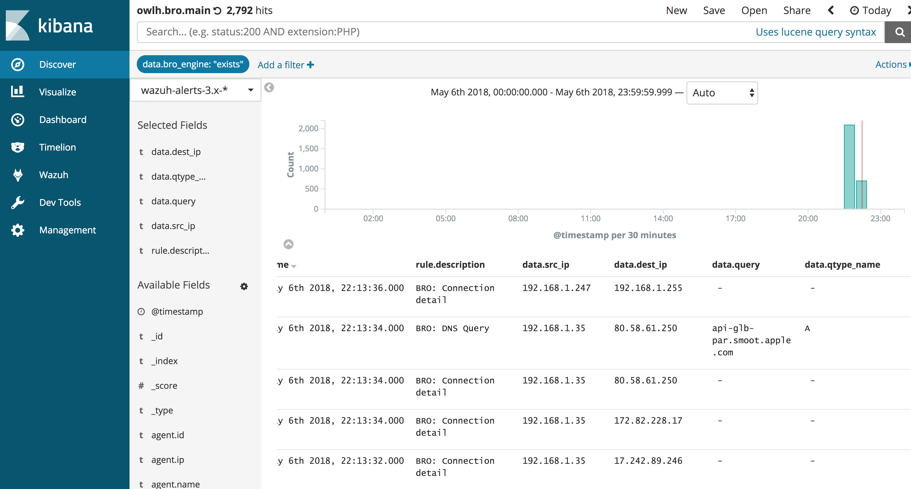

OwlH - Zeek and Wazuh¶
Integration Logical Diagram¶

Components¶
- OwlH Node - Zeek IDS and Wazuh Agent
- Wazuh Manger
- Logstash Server
- Elastic and Kibana Server
Let’s see what we need to modify on each component to be able to manage this Bro and Wazuh integration.
Configure - Zeek - OwlH Node¶
This system will require Bro working of course, and Wazuh agent installed. OwlH instructions will help to configure both Bro and Wazuh agent.
Zeek Logs Output format to JSON¶
Option 1 - Modify ASCII writer output¶
you can load the json_logs.bro configuration that will tell ASCII writer to write output in JSON format. You must include following line in your .bro configuration files. It can be /etc/bro/site/local.bro or you can follow our recomendation and write the configs in owlh.bro file (please, see below).
This will modify output and will store just json output, you won’t have ASCII output.
@load tuning/json_logs.bro
Option 2 - Use add-json package¶
Usually, you would like to have both outputs, ASCII and JSON. You can use add-json packet (https://github.com/J-Gras/add-json) and load it in your local.bro or owlh.bro.
@load packages/add-json/add-json.bro
To install add-json package you can use bro-pkg tool
bro-pkg install add-json
Note
bro-pkg installation (http://bro-package-manager.readthedocs.io/en/stable/quickstart.html#installation)*
Note
Thanks to C.L.Martinez and Jan.Grashoefer
Zeek Event Enritchment to help Wazuh ruleset¶
It is a good idea to help wazuh rules to do their job, to include a field that will identify what kind of log line we are analyzing. Bro output doesn’t include that info per line by default, so we are going to help wazuh by including the field ‘bro_engine’ that will tell wazuh what kind of log is it.
We are using redef function to include a custom field for each ::Info record of each Protocol. Here are just a few of them, we will include more by default in next releases.
redef record DNS::Info += {
bro_engine: string &default="DNS" &log;
};
redef record Conn::Info += {
bro_engine: string &default="CONN" &log;
};
redef record Weird::Info += {
bro_engine: string &default="WEIRD" &log;
};
redef record SSL::Info += {
bro_engine: string &default="SSL" &log;
};
redef record SSH::Info += {
bro_engine: string &default="SSH" &log;
};
Loading Zeek customizations at Zeek start¶
We include all OwlH customizations in OwlH_*.bro files, that helps to have a clear view of what OwlH does as well as we hope it will simplify configuration management.
Under /etc/bro/site we will create two files
- owlh.bro - Will include JSON call and @load for bro_engine field definition.
- owlh_types.bro - Will include all redef statments
You will only need to load OwlH.bro at the end of your local.bro file to include all these configurations
@load /etc/bro/site/OwlH.bro
owlh.bro looks like:
# Select prefered output
#@load tuning/json-logs.bro
@load packages/add-json/add-json.bro
@load /etc/bro/site/owlh_types.bro
and owlh_types.bro:
redef record DNS::Info += {
bro_engine: string &default="DNS" &log;
};
redef record Conn::Info += {
bro_engine: string &default="CONN" &log;
};
redef record Weird::Info += {
bro_engine: string &default="WEIRD" &log;
};
redef record SSL::Info += {
bro_engine: string &default="SSL" &log;
};
redef record SSH::Info += {
bro_engine: string &default="SSH" &log;
};
Wazuh Agent configuration¶
Note
Remember we are on Bro Node component.*
Modify your Wazuh agent to read the Bro Logs files
<localfile>
<log_format>syslog</log_format>
<location>/path/to/bro/logs/*.log</location>
</localfile>
Note
if needed, You can specify files instead of all .log ones
<localfile>
<log_format>syslog</log_format>
<location>/path/to/bro/logs/weird.log</location>
</localfile>
<localfile>
<log_format>syslog</log_format>
<location>/path/to/bro/logs/conn.log</location>
</localfile>
Configure - Wazuh Manager¶
Good news is that Wazuh’s JSON decoder works really great, so using JSON output from BRO allow us to save time developing an specific decoder for its standard ASCII out.
We only need to create a few rules to identify the Bro events and forward them to ELK.
Wazuh Zeek IDS Rules¶
Include the Wazuh rules into your /var/ossec/etc/rules/zeek-rules.xml file to manage your Zeek logs
<group name="zeek">
<rule id="990001" level="5">
<field name="bro_engine">SSH</field>
<description>Zeek: SSH Connection</description>
</rule>
<rule id="990002" level="5">
<field name="bro_engine">SSL</field>
<description>Zeek: SSL Connection</description>
</rule>
<rule id="990003" level="5">
<field name="bro_engine">DNS</field>
<description>Zeek: DNS Query</description>
</rule>
<rule id="990004" level="5">
<field name="bro_engine">CONN</field>
<description>Zeek: Connection detail</description>
</rule>
</group>
Note
remember restart your wazuh agent after change.*
Configure - Logstash Server¶
Logstash Filter¶
We need to modify Logstash filters (/etc/logstash/conf.d/) to allow JSON record cleaning from Bro to Wazuh-alert index parsing. It is necesary because bro uses [id] field to group network src and dest addresses and ports info and parsing will fail
Also, it is done so we can store IP-PORT data in the right fields for wazuh index
filter {
if [data][id][orig_h] {
mutate {
add_field => [ "[data][srcip]", "%{[data][id][orig_h]}" ]
add_field => [ "[data][dstip]", "%{[data][id][resp_h]}" ]
add_field => [ "[data][srcport]", "%{[data][id][orig_p]}" ]
add_field => [ "[data][dstport]", "%{[data][id][resp_p]}" ]
remove_field => [ "[data][id]" ]
}
}
}
Review your Kibana Dashboard¶
You will need to refresh your Wazuh-alerts-3.x indeces to include the new Zeek fields. from your kibana console, go to Management -> index -> select right wazuh-alerts index -> click top-right refresh icon to refresh
And that’s all folks.
If you need help¶
- email our support team - support@owlh.net
- join OwlH slack - OwlH Slack workspace
- ask for professional support and services - prohelp@owlh.net
OwlH - current v0.17.x - OwlH Changelog
documentation last updated - Oct 23, 2020